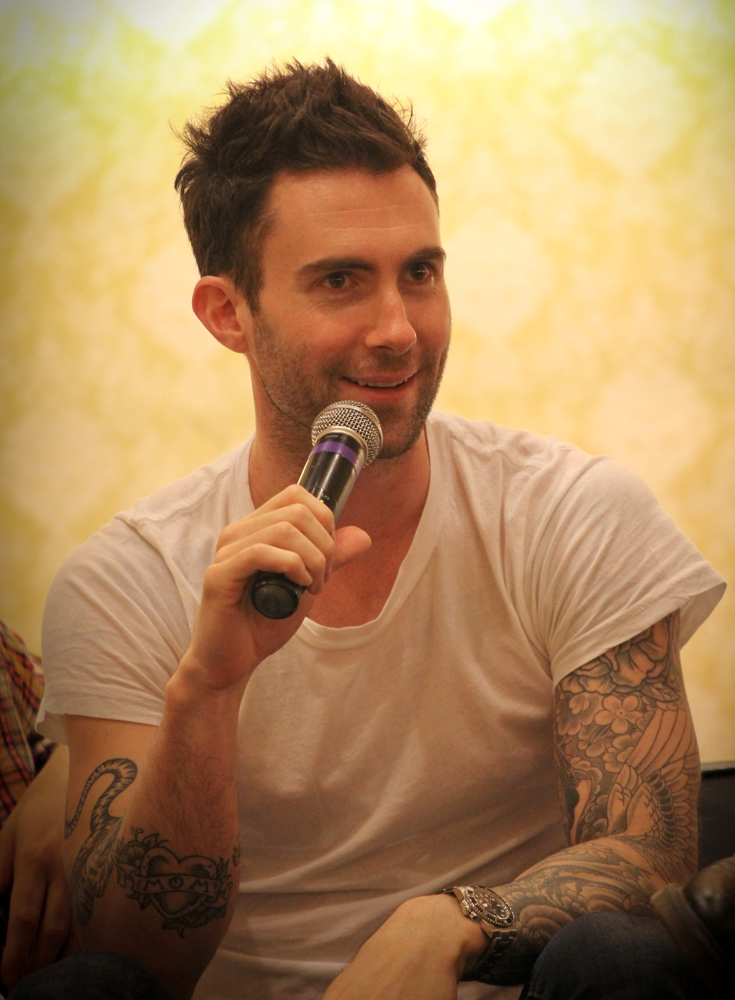

Biografía

Adam Noah Levine. Nació el 18 de marzo de 1979 (43 años) en Los Ángeles, California, Estados Unidos.
Su religión es el judaísmo y su lengua materna Inglés
Su familia esta compuesta por Behati Prinsloo (conyugé) y sus 2 hijos.
Es cantante, compositor, actor estadounidense y lider de la banda Maroon 5.
Inicio